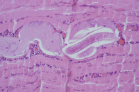
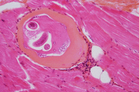

Les trichinelloses sont des zoonoses parasitaire provoquées par diverses espèces de nématodes vivipares du genre Trichinella.
Leur cycle évolutif fait intervenir un seul hôte, successivement hôte définitif, qui héberge les parasites adultes dans sa muqueuse intestinale, puis hôte intermédiaire avec apparition de larves infectantes encapsulées dans les fibres musculaires striées squelettiques.
La contamination s'effectue par ingestion de viande parasitée, consommée crue ou insuffisamment cuite (porc, sanglier, ours, cheval...). Les trichinelloses constituent un risque alimentaire pour l'homme en raison du nombre élevé d'espèces, de la répartition cosmopolite du parasite, de la faible spécificité d'hôte et de la complexité du cycle épidémiologique.
La maladie peut être efficacement combattue par un dépistage efficace au niveau de la viande ou par une cuisson ou congélation appropriées. C’est pourquoi, la France a considérablement renforcé son système de prévention au niveau des abattoirs avec la constitution depuis 1999 d’un réseau de contrôle et de surveillance animé par un Laboratoire National de Référence des Parasites transmis par les aliments et de 2002 à 2011 d’un CNR des Trichinella. Depuis 2011, le laboratoire de Parasitologie de l'hôpital Cochin est expert pour cette parasitose.
La triade symptomatique (fièvre, œdème de la face et myalgies) est très évocatrice du diagnostic surtout si observation de cas groupés.
Les manifestations cliniques associant fièvre, myalgies, œdème périorbitaire bilatéral et asthénie sont très évocatrices de la maladie. Les signes biologiques d’appel associent une éosinophilie très élevée et une augmentation des enzymes musculaires. La confirmation s’effectue par le sérodiagnostic.
Une « épidémie » au sein d’un laboratoire d’analyse médicale d’hyperéosinophilies associées à une perturbation des enzymes musculaires doit faire suspecter une épidémie de grande ampleur.
Le traitement associe l'albendazole à une corticothérapie. La gravité clinique de certaines formes (atteintes neurologiques et cardiaques), le risque létal de la maladie et l'habitus alimentaire français explique l’importance de connaître cette parasitose et son impact en santé publique.
Une identification rapide des consommateurs exposés et un diagnostic précoce de la maladie permettent un traitement qui permet d’éviter la maladie ou ses complications.
voir ci dessous, article de 2010 dans la Revue du Praticien et article de 2017 dans la Lettre de l'Infectiologue
Dupouy-Camet et al. RDPraticien 2010_2_159-1.pdf
Paugam et al 2017 Lettre de l'infectiologue.pdf


Larves musculaires observées sur des biopsies musculaires